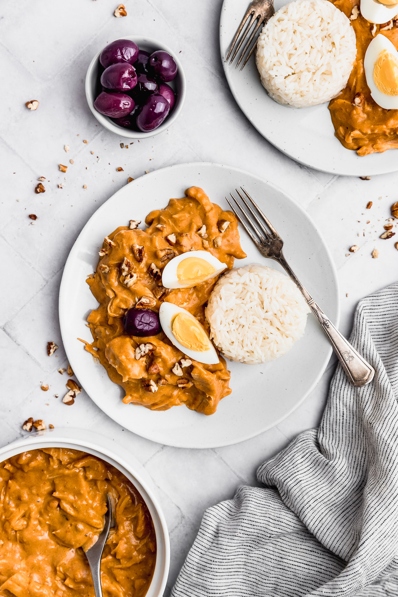

Home
Receta del Aji de Gallina

Descripción
El Ají de gallina es un guiso cremoso y tradicional de la costa de la gastronomía peruana. Consiste en una crema espesa elaborada con ají amarillo, leche, queso, pan remojado (o galletas) y pechuga de gallina o pollo deshilachada.
Nació como una transformación criolla en el Perú del virreinato a partir de un postre dulce español del siglo XIV conocido como manjar blanco
Ingredientes:
- 1 pechuga de gallina o pollo.
- 4 rebanadas de pan de molde sin corteza.
- 1 taza de leche evaporada.
- 5 cucharadas de pasta de aji amarillo.
- 1 cebolla roja y ajos picados.
- 1/2 taza de pecanas picadas y molidas.
- Queso parmesano al gusto.
- Sal, pimienta, comino y palillo.
- Para acompañar: arroz blanco, papa amarilla, huevo duro y aceituna
Pasos de preparación
- Hierve la pechuga de pollo en una olla con agua y sal, apio y zanahoria por unos 15 a 20 minutos. retira el pollo, deshilacha y guarda el caldo.
- Coloca las rebanadas de pan en un bol con la leche evaporada para que se suavicen.
- En una olla con aceite, sofrie la cebolla picada en cubos y el ajo hasta que esten transparentes, agregar la sal, pimienta, comino y el aji amarillo. Cocinalo bien a fuego lento.
- Añade a la licuadora el pan remojado en leche con un poco de caldo, luego añadelo al aderezo, remueve constantemente para que no se pegue.
- Incorpora el pollo deshilachado, las pecanas trituradas y un poco de queso parmesano. Mezcla bien y ajusta la espesura con un chorrito extra de caldo o leche.
- Sirvelo caliente sobre rodajas de papas amarillas sancochadas, acompañado de una porcion de arroz, uno o dos huevos duros y una aceituna.